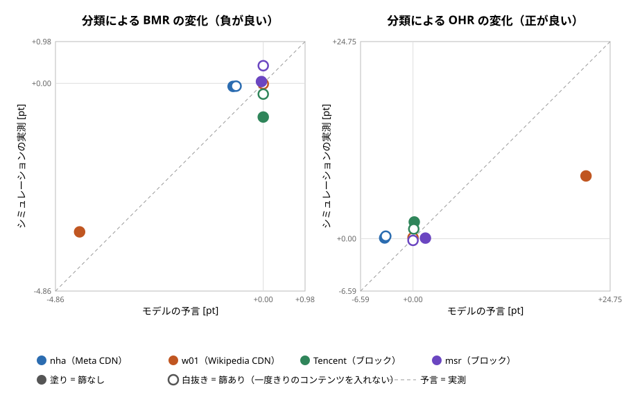

提案が効くワークロードを事前に見分ける指標（4 トレースでの第一歩）
2026-11-26。この PC の 4 トレース（nha・w01・Tencent・msr）、全量。分類の得＝提案（ru-otsu-ghost-cb）−分類なしの RU（ru-none-nat-cb）、篩ありは両方に篩（-adm）。予言は og_che（コンテンツ単位の Che 近似、篩は「一度きりのコンテンツを入れない」で近似）。
分かったこと
- 篩で効果が消えるかどうかは「篩の後に SSD がどれだけ入れ替わるか」で決まっていた。w01 は篩で入れ替わりが 3.9 回 → 1.1 回に落ち、ほとんど追い出しが起きなくなるので、分類の得が −3.48 → −0.01 ポイントに消えた。nha（198 → 121 回）と Tencent（42 → 21 回）は圧力が残り、得も残った（nha −0.07 → −0.07、Tencent −0.79 → −0.25）。
- 「篩が λ のばらつきを取り去る」という前の予想は外れた。篩の後の、大きさで分けられるばらつき（SSD のヒットで測る）は、4 本とも篩でむしろ増えた。
- コンテンツ単位のモデル（og_che）は w01 をよく当てた（予言 −4.30 対 実測 −3.48、篩ありは 0.00 対 −0.01）。一方、Tencent（予言 0.00 対 −0.79）と nha（−0.71 対 −0.07）は外れた。Tencent は Region の巻き添えの効果がモデルに無く、nha はコンテンツを分割して持つ巨大なコンテンツと小さな容量（足跡の 1.3%）がモデルの外。
- 指標は二つの積の形になる見込み：(1) 圧力（容量が何回入れ替わるか。篩を使うなら篩の後）と、(2) 大きさで分けられる λ のばらつき。(1) は事前にきれいに取れる。(2) は、分類しない run の表から測ると、混ぜたキャッシュのせいで人気のコンテンツもヒットできず、潜在的な得が隠れてしまう（w01 で小さく出る）。トレースだけから測る形が要る。
1. 実測：分類の得（BMR・OHR、ポイント）と SSD の入れ替わり
| トレース | ΔBMR 篩なし | ΔBMR 篩あり | ΔOHR 篩なし | ΔOHR 篩あり | 入れ替わり 篩なし | 入れ替わり 篩あり |
|---|---|---|---|---|---|---|
| nha（Meta CDN） | −0.072 | −0.065 | +0.08 | +0.31 | 198 回 | 121 回 |
| w01（Wikipedia CDN） | −3.475 | −0.013 | +7.87 | +0.13 | 3.9 回 | 1.1 回 |
| Tencent（ブロック） | −0.788 | −0.252 | +2.09 | +1.22 | 42 回 | 21 回 |
| msr（ブロック） | +0.041 | +0.412 | +0.07 | −0.22 | 3.6 回 | 1.2 回 |
入れ替わり＝分類しない run の SSD 書き込み ÷ SSD の容量。msr は篩ありで分類が少し悪くする（+0.41）。名簿の配分が msr を読み違えることは以前から分かっている（未解決）。
2. 予言と実測

| トレース | 篩 | 予言 ΔBMR（提案の線で） | 実測 ΔBMR | 予言 ΔOHR | 実測 ΔOHR | 当たり外れ |
|---|---|---|---|---|---|---|
| w01 | なし | −4.30 | −3.48 | +21.7 | +7.9 | 向きと大きさ |
| w01 | あり | 0.00 | −0.01 | 0.0 | +0.1 | 消えることを当てた |
| msr | なし | −0.04 | +0.04 | +1.6 | +0.1 | どちらも 0 近く |
| msr | あり | 0.00 | +0.41 | 0.0 | −0.2 | 配分の読み違い（モデルの外） |
| Tencent | なし／あり | 0.00 / 0.00 | −0.79 / −0.25 | +0.2 / +0.1 | +2.1 / +1.2 | Region の巻き添えがモデルに無い |
| nha | なし／あり | −0.71 / −0.64 | −0.07 / −0.07 | −3.6 / −3.4 | +0.1 / +0.3 | 分割して持つ巨大なコンテンツ・容量 1.3% |
相関は BMR で 0.94・OHR で 0.95 だが、w01 の 1 点に引っ張られている（順位の相関は 0.5・0.4）。4 本では指標の境目を言えない。
3. 大津の目で見た「大きさで分けられる λ のばらつき」（分類しない run の表から）
| トレース | 篩 | ln(Q/A)（大津が使う値） | ln(1＋SSD ヒット/A)（篩の後の値） |
|---|---|---|---|
| nha | なし／あり | 1.050 / 0.605 | 0.0099 / 0.0149 |
| w01 | なし／あり | 0.041 / 0.089 | 0.0041 / 0.0698 |
| Tencent | なし／あり | 0.033 / 0.045 | 0.0645 / 0.1522 |
| msr | なし／あり | 0.025 / 0.025 | 0.0086 / 0.0183 |
- 値は「線 1 本で分けたときの組の間のばらつき」（大津の得点）。A＝書いたバイト、Q＝リクエストのバイト（篩で弾かれたコンテンツへのリクエストと DRAM のヒットを含む）。
- 大津が使う ln(Q/A) は、nha では DRAM のヒットが大半を占める（1.05 対 0.0099）。篩のある run では、Q に弾かれたコンテンツへのリクエストが入るので、一度きりのコンテンツの多い段の価値が水増しされる。キットの
-admの run の中の大津も同じ。 - 篩の後の値（SSD のヒットで測る）は、4 本とも篩で増えた。
- w01 の篩なしは 0.004 と小さいのに、得は最大だった。混ぜたキャッシュでは一度きりの 1M に押し出されて人気の小さいコンテンツもヒットできず、run の中では潜在的な差が見えないため。指標の (2) は run からではなく、トレースから測る必要がある。
4. トレースだけから測った指標（og_ind、キットの ./run.sh indicator）
DRAM を前段の LRU とし、コンテンツ単位の Che 近似で、paper と同じ SSD・DRAM の大きさから計算した（シミュレーションなし）。
| トレース | 篩 | 入れ替わり 予言（run の実測） | 大きさで分けられるばらつき | η | 実測 ΔBMR |
|---|---|---|---|---|---|
| w01 | なし | 3.5（3.9） | 0.035 | 0.57 | −3.48 |
| w01 | あり | 0.87（1.1） | 0 | – | −0.01 |
| msr | なし | 3.4（3.6） | 0.013 | 0.82 | +0.04 |
| msr | あり | 0.41（1.2） | 0 | – | +0.41 |
| Tencent | なし／あり | 14 / 13（42 / 21） | 0.035 / 0.042 | 0.54 / 0.57 | −0.79 / −0.25 |
| nha | なし／あり | 1647 / 1616（198 / 121） | 0.18 / 0.19 | 0.85 | −0.07 / −0.07 |
- 入れ替わりは、篩で圧力が消えるトレース（w01・msr）を事前に当てた（どちらも 1 回未満と予言）。篩なしの w01・msr は run とほぼ同じ値。
- ばらつきは w01・Tencent（効く、0.035）と msr（効かない、0.013）を正しく分けた。run の表からは w01 が 0.004 と小さく出て分けられなかったので、トレースから測る意味がある。
- nha は範囲外：巨大なコンテンツを分割して持ち、容量が足跡の 1.3% しかないので、入れ替わりの水準が合わない。ばらつきは最大なのに得は小さいが、基準の BMR が 4.7% しかないため、基準に対する割合（−1.5%）で見れば Tencent（−1.5%）と同じ。キットの図は、差（ポイント）と割合（%）の両方を描く。
5. 次の一手
- （済み、§4）トレースだけから (2) を測る：大きさの段ごとに「リクエストのバイト ÷ 異なるコンテンツのバイト」を、キャッシュが一巡する程度の長さの窓で数え、篩を使うなら一度きりのコンテンツを除いて大津の得点を出す（og_che の数え方を広げれば作れる）。
- (1) 圧力は、篩なしならトレースの足跡と容量から、篩ありなら「2 回以上リクエストされるコンテンツの足跡」から事前に出せる。
- キットに入れた（
./run.sh indicator、11-26）。別の PC の全トレースで指標と実測の得を並べ、境目（「入れ替わりが 2 回以上で、(2) が○○以上なら効く」）を探す。paper-final2 の結果があれば、それだけで report.html に並ぶ。 - 大津の価値を「書いた 1 バイトあたりの SSD ヒット」に変える案は、篩のある構成の水増しと w01 の 1 段ずれの両方を直す見込み。
再現：tools/synth/pred_measure.sh（実測の run）、pred_che.sh（og_che の予言、og_che に -a 篩を追加）、pred_compare.py（results/pred_vs_meas.json・この図）、otsu_view.py（results/otsu_view.json）。